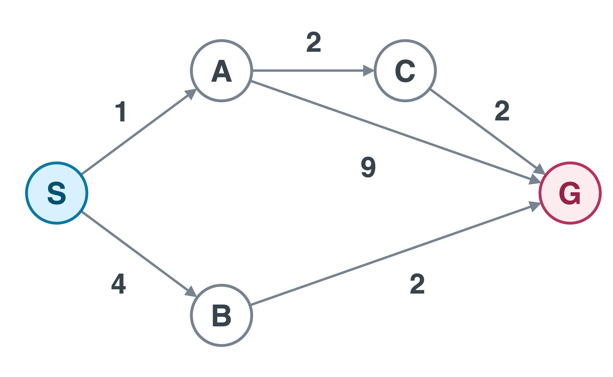
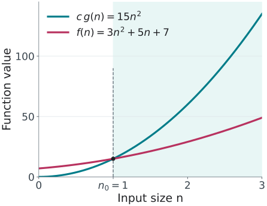
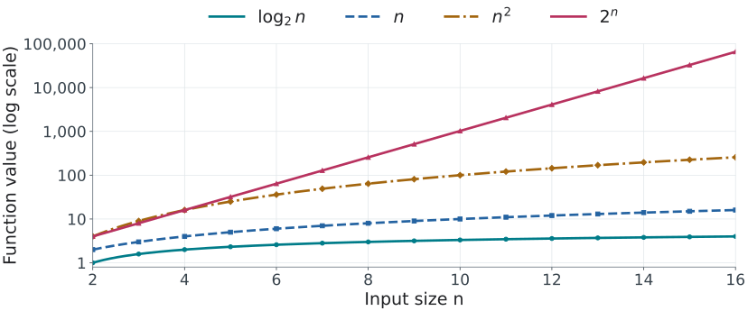
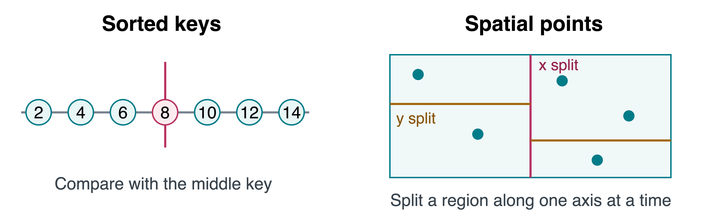

CS 463G & CS 663
(Intro to) AI
Lecture 8: Review of Search
Fall 2026
| Task | What must the answer guarantee? |
|---|---|
| Fewest moves through an unweighted maze | Shortest path |
| Cheapest route with unequal nonnegative costs | Lowest total cost |
| Cheapest route with a useful lower-bound estimate | Lowest total cost with guidance |
| Any exit in a finite maze | A valid path, not necessarily the shortest |
Choose an algorithm for each row. Explain what information it uses.
Breadth-first search (BFS), uniform-cost search (UCS), A*, and depth-first search (DFS) are suitable choices, respectively.
Start at S. Find a route to G. Edges are directed and labels are costs.

Add unreached successors alphabetically. Remove from the left and test for the goal.
| Removed | Queue after processing | Parent update |
|---|---|---|
| S | [A,B] | A\gets S, B\gets S |
| A | [B,C,G] | C\gets A, G\gets A |
| B | [C,G] | Keep G\gets A |
| C | [G] | Keep G\gets A |
| G | stop | Follow parents backward |
Initial queue: [S].
An already reached state keeps its first parent.
Returned path: S\to A\to G. Two edges, but cost 1+9=10. BFS minimizes the number of edges, not arbitrary edge costs.
Use recursive-style DFS: enter the alphabetically first unvisited successor.
| Enter | Current path |
|---|---|
| S | [S] |
| A | [S,A] |
| C | [S,A,C] |
| G | [S,A,C,G] |
No backtracking is needed in this run.
DFS returns a path of cost 1+2+2=5. Does this establish that DFS is optimal?
No. If DFS explores G before C at A, it returns the cost-10 path. Its first answer depends on successor order.
g is the queued path’s cost. best[n] stores the cheapest cost found for state n.
| Removed | Logical frontier, ordered by g |
|---|---|
| S:0 | A:1,\ B:4 |
| A:1 | C:3,\ B:4,\ G:10 |
| C:3 | B:4,\ G:5 |
| B:4 | G:5 (the new candidate costs 6) |
| G:5 | Stop with S\to A\to C\to G |
After expanding C:
best[G]: 10\to5.
parent[G]: A\to C.
Discovering G at cost 10 does not finish the search. Removing it at the minimum frontier cost does.
h(n) estimates the remaining cost. These values are consistent on this graph.
| State | S | A | B | C | G |
|---|---|---|---|---|---|
| h(n) | 5 | 4 | 2 | 2 | 0 |
After expanding S, both searches have A and B on the frontier.
Priority: h(n).
Choose B: h(B)=2<h(A)=4. Then choose G.
Path cost: 4+2=6.
Priority: f(n)=g(n)+h(n).
f(A)=1+4=5.
f(B)=4+2=6.
Choose A, then C and G. Path cost: 5.
True remaining costs:
h^*(A)=4, h^*(B)=2, h^*(C)=2.
Assume a finite graph and nonnegative edge costs.
| Situation | What the implementation needs |
|---|---|
| Cycles in a finite graph | Duplicate detection |
| UCS finds a cheaper path | Update the best cost and parent |
| A* with a consistent heuristic | An expanded state need not reopen |
| A* with an admissible but inconsistent heuristic | Allow reopening when a better path appears |
Consistency: for every edge n\to n' with cost c,
h(n)\le c+h(n'),\qquad h(G)=0.
For UCS and A*, retain improved routes and accept a goal when its current entry leaves the priority queue.
Big-O ignores constant factors and lower-order terms as input size grows.
A function f(n) is O(g(n)) if there exist positive constants c and n_0 such that
0\le f(n) \le c \cdot g(n)
for every n\ge n_0.

For n\ge1, 3n^2+5n+7\le15n^2. Choose c=15 and n_0=1 to show O(n^2).
State whether a bound describes the worst case, average case, or another case. Big-O alone does not specify which.
| Complexity | Informal shape | Example |
|---|---|---|
| O(1) | constant | array index access |
| O(\log n) | grows slowly | binary search |
| O(n) | linear | scan a list |
| O(n \log n) | log-linear | merge sort |
| O(n^2) | quadratic | nested pair checks |
| O(2^n) | exponential | brute-force subsets |
| O(n!) | factorial | brute-force permutations |
The curves show the actual functions. Each major step up the vertical axis multiplies the value by 10.

At n=16, n^2=256 while 2^n=65{,}536. These are function values, not measured runtimes.
Binary search works because a sorted line can be split in half.
A k-dimensional tree (KD-tree) partitions points using one coordinate at a time. Here k is the number of dimensions.
| Search structure | Split rule | Good for |
|---|---|---|
| Binary search | one sorted dimension | ordered keys |
| KD-tree | often alternate axes and split near a median | spatial points |

Let V be the number of vertices and E the number of edges in a finite graph.
| Representation | Stored graph | Full BFS/DFS traversal |
|---|---|---|
| Adjacency list | O(V+E) | O(V+E) |
| Adjacency matrix | O(V^2) | O(V^2) |
For A, a list stores just (C,2) and (G,9).
A matrix row checks all five possible destinations, including absent edges.
For a sparse graph, most matrix entries describe no edge.
Mark each state reached on insertion, so each vertex enters the queue at most once.
A complete tree with branching factor b>1 and maximum depth d has b^d leaves. BFS may need O(b^d) frontier space on that tree.
Mark a vertex when entering it and skip already visited vertices.
Recursive DFS uses O(V) additional space in a general graph. A shallow call stack alone does not make the entire search use O(\log V) space.
For a finite explicit graph, let V be vertices and E be edges.
| Algorithm | Priority | Assumption for the usual bound |
|---|---|---|
| UCS | g | Nonnegative edge costs |
| Greedy | h | Expand each state at most once |
| A* | g+h | Consistent heuristic, no re-expansion |
With adjacency lists and a binary heap holding one entry per frontier state:
\text{Time}=O((V+E)\log V),\qquad \text{storage}=O(V+E).
Decrease-key lowers an existing entry’s priority and restores heap order in O(\log V), using an index to locate that entry.
Storage includes the graph. Reopening states or retaining stale heap entries requires extra accounting.
Let d be the solution depth and C^* the optimal total cost.
If two different optimal routes have the same total cost C^*, what can their frontier priorities be when h=h^*?
Both can have f=C^*. Tie-breaking and heuristic evaluation cost still matter, so a perfect heuristic does not guarantee O(d) runtime.
Suppose a complete search tree has branching factor b=3 and maximum depth d=10. The root has depth 0.
| Depth | 0 | 1 | 2 | 3 | \cdots | 10 |
|---|---|---|---|---|---|---|
| Nodes in the layer | 1 | 3 | 9 | 27 | \cdots | 59,049 |
\text{Leaves}=3^{10}=59{,}049,\qquad \text{total nodes}=\sum_{i=0}^{10}3^i=88{,}573.
How can traversal be linear in V+E and exponential in depth?
The number of vertices V itself grows exponentially with d. Always state what the input-size variable measures.
A UCS implementation uses the shown graph but makes these choices:
Which route does it return? If only the goal test is fixed, does the other bug remain?
Early goal test: expanding A returns cost 10 immediately.
Permanent visited-on-generation: even with a goal test on removal, it rejects the later route through C costing 5.
Check the priority rule, duplicate policy, and stopping rule together. Then state the graph representation and input-size variables for the complexity bound.